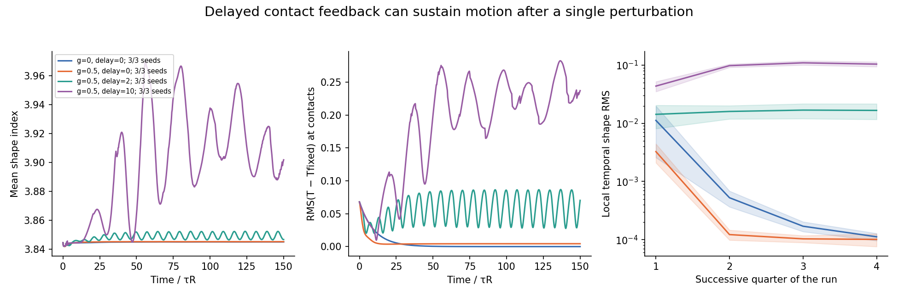
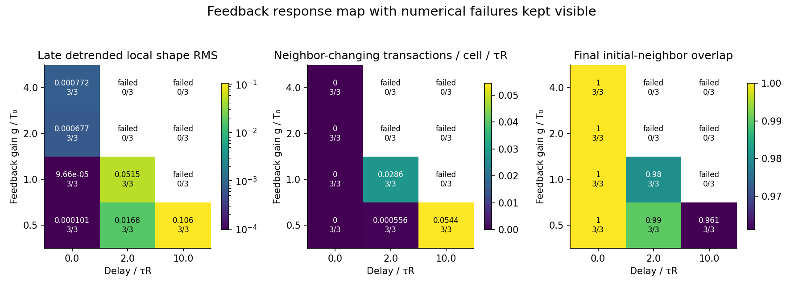
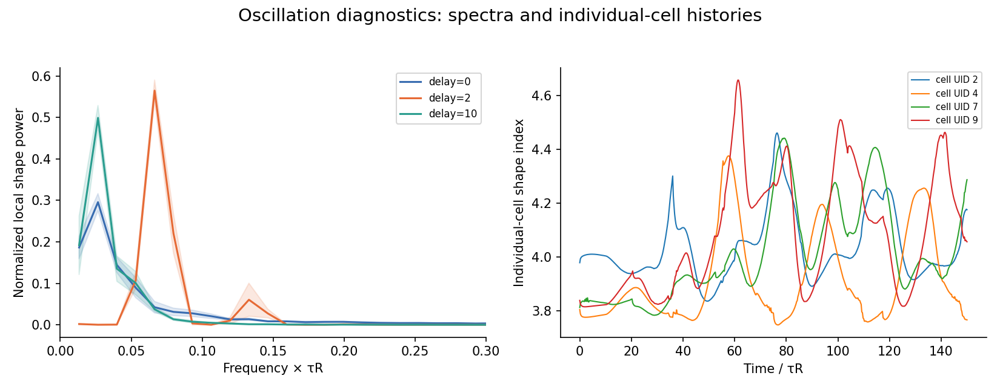
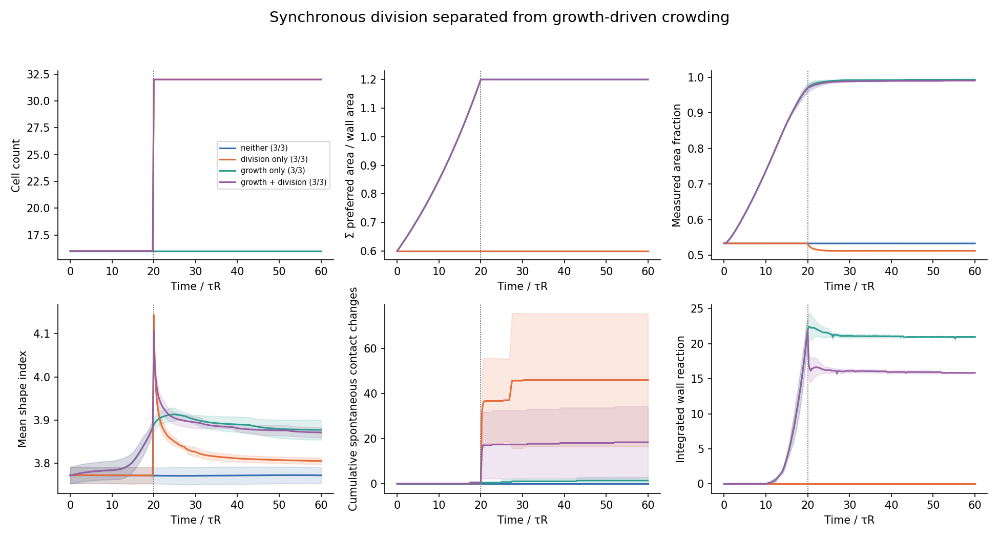
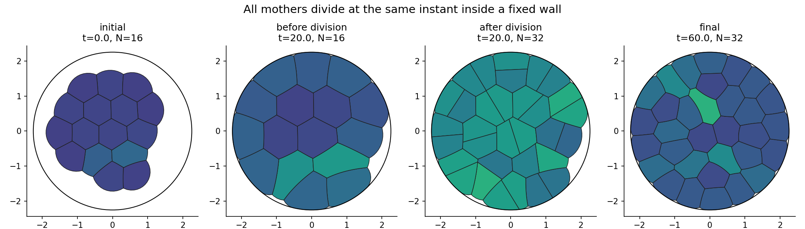
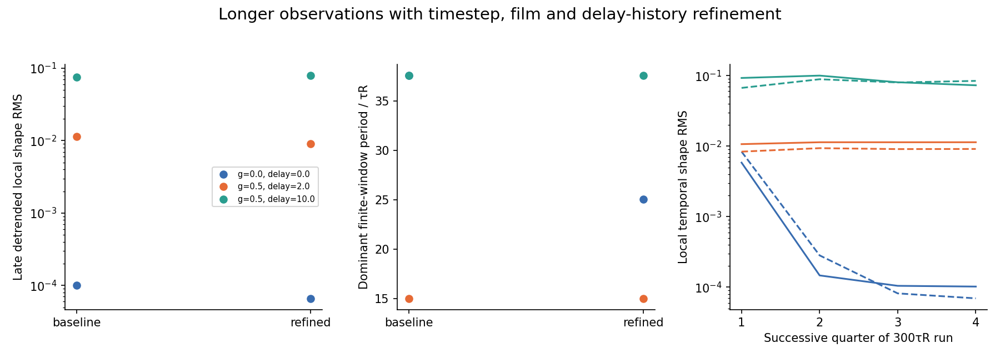
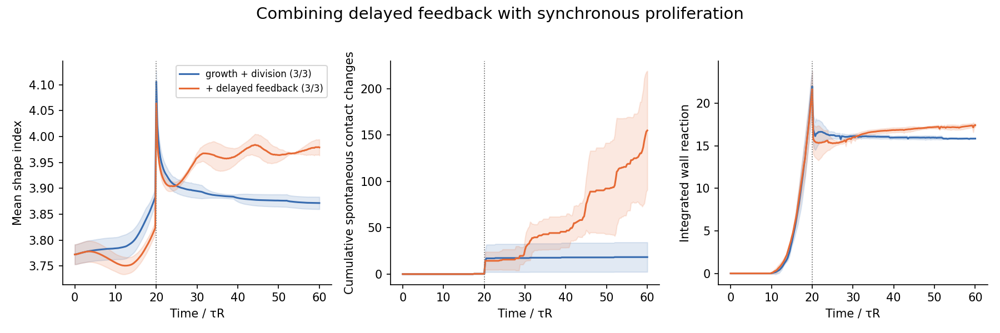
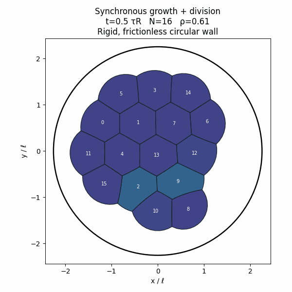
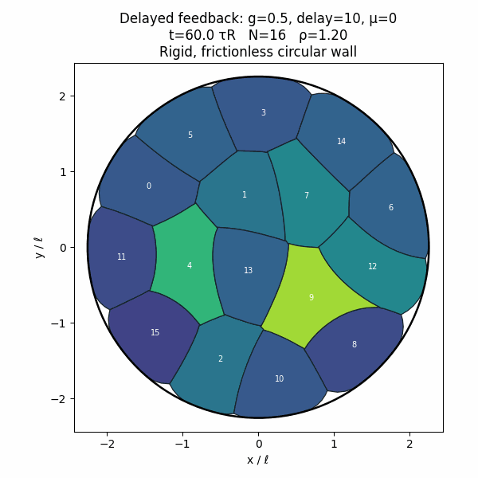

36/51 main runs completed. Fixed circular wall. Explicit model extensions; failed geometries remain unclassified.
Findings · Methods · Data summary

No ongoing stochastic forcing: μ=0. A common deterministic tension kick initializes each run. Left and middle are seed 1; right averages local shape variability over completed seeds (bands: seed SD). Gain g multiplies tanh(delayed relative contact stretch / 0.1). The zero-delay case is an essential control. This is an explicit extension of the original tension law.

N=16, ρ=1.2, W/T₀=1, τT=10τR. Each tile uses only completed runs and reports accepted/attempted seeds. Failed geometries are not assigned a physical phase. The fluctuation map uses a logarithmic color scale. A spectral peak or large RMS alone does not establish an oscillatory phase.

Spectra average power over cells after linear detrending and a Hann window, then normalize per seed; the last half of each run is used. Individual histories show the four most variable cells of the seed-1, g=0.5, delay=10 run, selected for illustration. Their selection is not an unbiased estimate of tissue-wide amplitude.

Start with 16 cells at ρ=0.6; wall area stays fixed. Growth doubles every mother’s K over 0–20τR and then stops. At t=20τR, all current mothers divide in one atomic round where enabled. Daughters split K and area equally, conserving total K at cleavage. New daughter contacts start at 2T₀−W. Division itself is excluded from spontaneous contact-change counts; subsequent rearrangements are included. Shape means compare different populations across cleavage.

Growth + division, seed 1. Colors show shape index on a common 3.5–4.7 scale. Before and after cleavage share the same timestamp and tissue outline; the new internal daughter contacts change cell shapes without moving the old boundary nodes. The simulation takes no mechanical step between mother splits.

Seed 1, selected after the pilot. Baseline dt=0.005, film spacing=0.1, history spacing=0.05; refined values are 0.0025, 0.05 and 0.025. Solid block curves are baseline; dashed are refined. Preparation is repeated at each resolution, so pointwise trajectories need not match. These are sensitivity checks, not a demonstrated convergence order. A nonoscillating control also has a largest Fourier bin; its reported period is not a physical oscillation.

Matched growth/division protocol and seeds, adding g=0.5 and delay=2τR. Both groups use μ=0.05 and divide all mothers at 20τR. Bands are seed SD. This combined three-seed pilot was selected after the component tests and has not received its own mesh-refinement study. Increased event counts may include repeated reversible contact changes.

